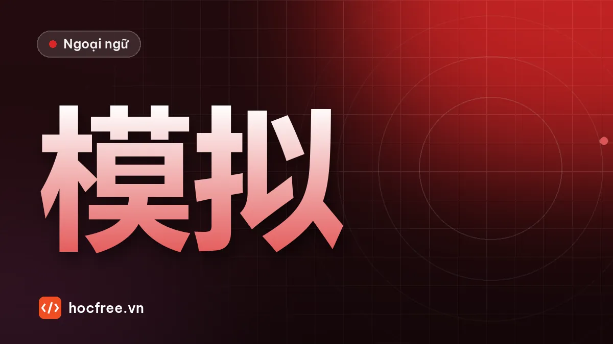

Đề thi thử HSK 3 tự biên soạn theo dạng câu mới, có đáp án
Đề luyện đủ dạng câu nghe (qua văn bản đọc to), đọc, viết và nói theo đề mẫu HSK 3 mới, có đáp án, giải thích và bảng quy đổi tỉ lệ đúng.

Học xong bài này, bạn sẽ
- Làm đề đủ các dạng câu trong thời gian giới hạn
- Tính tỉ lệ đúng từng phần
- Biết phần nào cần ôn trong 2 tuần cuối
Nên học trước: Cấu trúc đề HSK 3 mới và đăng ký thi
Nội dung bài viết
Đây là đề luyện tự biên soạn, rút gọn theo các dạng câu của đề HSK 3 mới: 15 câu nghe, 15 câu đọc, 10 câu viết và 3 bài nói. Đề không phải đề thi thật, không mô phỏng chính xác độ khó và cách chấm chính thức. Mục đích là giúp bạn làm quen nhịp làm bài và tìm điểm yếu trước khi làm đề mẫu chính thức đầy đủ ở dự án cuối khóa.
Điều kiện làm bài
- Thời gian: nghe khoảng 12 phút, đọc 15 phút, viết 12 phút, nói 8 phút. Bấm giờ, làm liền một mạch.
- Phần nghe: nhờ người đọc hoặc dùng công cụ đọc văn bản, mỗi câu đọc hai lần, nghỉ 8–10 giây giữa các câu, không dừng lại.
- Không tra từ, không xem lại bài học.
Phần 1. Nghe (15 câu)
1. 男的现在在哪儿？ A. 公司 B. 家里 C. 路上
2. 女的什么时候去北京？ A. 今天 B. 明天 C. 下个星期
3. 男的为什么迟到了？ A. 起晚了 B. 堵车了 C. 生病了
4. 那件衣服怎么样？ A. 太大了 B. 太贵了 C. 颜色不好
5. 女的想喝什么？ A. 咖啡 B. 茶 C. 果汁
6. 他们最可能在哪儿？ A. 医院 B. 饭馆 C. 机场
7. 男的是什么意思？ A. 会议取消了 B. 会议改时间了 C. 他不参加会议
8. 女的学汉语多长时间了？ A. 三个月 B. 半年 C. 一年
9. 男的觉得这个电影怎么样？ A. 很有意思 B. 没意思 C. 没看完
10. 女的要男的做什么？ A. 关窗户 B. 开空调 C. 关灯
11. 他们是什么关系？ A. 同事 B. 夫妻 C. 老师和学生
12. 男的的手机怎么了？ A. 丢了 B. 坏了 C. 没电了
13. 女的周末打算做什么？ A. 加班 B. 爬山 C. 在家休息
14. 根据对话，可以知道什么？ A. 男的会开车 B. 男的不会开车 C. 男的喝酒了，不能开车
15. 小王为什么不来了？ A. 他要出差 B. 他忘了 C. 他病了
Văn bản nghe (chỉ người đọc được xem trước)
- 女：你到公司了吗？ 男：还没有，路上车太多了，我还要二十分钟。
- 男：你今天去北京吗？ 女：本来是今天，现在改到明天了。
- 女：你怎么又迟到了？ 男：对不起，今天早上我起晚了。
- 男：这件衣服你穿着很漂亮，买吧。 女：漂亮是漂亮，可是太贵了。
- 男：你喝咖啡还是喝茶？ 女：都不要，给我一杯果汁吧。
- 男：您好，请出示一下您的护照和机票。 女：好的，给您。
- 女：下午三点的会还开吗？ 男：开，不过改到四点了。
- 男：你汉语说得真好，学了多长时间了？ 女：半年了。
- 女：那个电影你看了吗？ 男：看了，可是没什么意思，我看了一半就睡着了。
- 女：外边太吵了，你把窗户关上吧。 男：好。
- 男：老婆，今天晚上吃什么？ 女：我做了你最喜欢的鱼。
- 女：我给你打了好几次电话，你怎么不接？ 男：对不起，我的手机没电了。
- 男：周末一起去爬山吧？ 女：这个周末不行，我得在家好好休息一下，太累了。
- 女：你开车送我回家吧。 男：不行，我刚才喝了一杯啤酒。
- 男：小王怎么还没来？ 女：他刚才打电话说，他突然发烧了，今天来不了了。
Phần 2. Đọc (15 câu)
A. Ghép câu (16–20)
16. 你的新工作怎么样？ 17. 这个字怎么读？ 18. 我们几点出发？ 19. 你为什么不吃了？ 20. 外边下雨了吗？
a. 我已经吃饱了。 b. 还没有，可是天阴了。 c. 我也不认识，查一下词典吧。 d. 挺好的，同事都很热情。 e. 早上七点，别迟到。
B. Điền từ (21–25). Từ cho sẵn: A. 把 B. 虽然 C. 越来越 D. 一直 E. 被
21. 请___这些资料交给经理。 22. 你___往前走，就能看见银行。 23. 我的自行车___人骑走了。 24. ___今天很冷，但是他还是穿得很少。 25. 来越南的中国游客___多了。
C. Đọc đoạn văn (26–30)
阿兰是一家电子公司的翻译，公司的经理和很多工程师都是中国人。她每天的工作就是帮越南同事和中国同事沟通。刚开始的时候，她觉得工作非常难，因为有很多专业词她都不懂，开会的时候常常听不懂。后来，她每天下班以后都花一个小时学习专业词，还请中国同事说慢一点儿。半年以后，她的翻译越来越好，经理也常常表扬她。阿兰说，现在她最大的愿望是明年能去中国工作一段时间。
26. 阿兰做什么工作？ A. 工程师 B. 翻译 C. 经理
27. 刚开始的时候，阿兰觉得工作怎么样？ A. 很轻松 B. 很难 C. 很有意思
28. 为什么开会的时候她常常听不懂？ A. 同事说汉语 B. 有很多专业词 C. 会议太长
29. 阿兰用了什么办法？ A. 换了工作 B. 每天学习专业词 C. 不参加会议
30. 阿兰明年想做什么？ A. 去中国工作 B. 当经理 C. 学英语
电子 diànzǐ: điện tử. 沟通 gōutōng: trao đổi, giao tiếp. 专业词 zhuānyè cí: từ chuyên ngành. 后来 hòulái: về sau. 花 huā: tiêu, dành (thời gian). 愿望 yuànwàng: mong ước. 一段时间: một thời gian.
Phần 3. Viết (10 câu)
A. Viết chữ Hán theo pinyin (31–35)
31. 我们明天下午开（huì）___。 32. 他（yǐ）___经回家了。 33. 你汉语说（de）___很好。 34. 请（zài）___说一遍。 35. 我想（qǐng）___一天假。
B. Viết câu theo tranh và từ gợi ý (36–40). Tưởng tượng tranh theo mô tả.
36. Tranh: người đàn ông đang lái xe. Từ: 开车
37. Tranh: bàn làm việc có máy tính và nhiều tài liệu. Từ: 放
38. Tranh: một cô gái cười, cầm bó hoa. Từ: 高兴
39. Tranh: hai người đang chạy bộ trong công viên. Từ: 跑步
40. Tranh: một người ngồi trước bánh sinh nhật có nến. Từ: 生日
Phần 4. Nói (3 bài)
- Lặp lại câu: nhờ người đọc câu 2, 7, 13, 15 ở văn bản nghe, mỗi câu một lần; nhắc lại.
- Miêu tả tranh 1 phút 30 giây: chọn ảnh một quán cà phê hoặc văn phòng; miêu tả theo khung 4 bước.
- Trả lời câu hỏi 2 phút: 你觉得学习汉语对你的工作有什么帮助？
Ghi âm cả ba bài, chấm theo bảng 5 tiêu chí ở bài luyện nói.
Đáp án
Xem đáp án 40 câu
Nghe: 1C 2B 3A 4B 5C 6C (护照, 机票: hộ chiếu, vé máy bay) 7B 8B 9B 10A 11B (老婆) 12C 13C 14C (xem giải thích) 15C (突然发烧了).
Giải thích câu 14: người nam nói 不行，我刚才喝了一杯啤酒, nghĩa là anh ấy uống bia nên không lái được. Đáp án đúng nhất là C. Đáp án A (biết lái) chỉ là suy luận, không phải thông tin được nói. Đây là kiểu bẫy hay gặp: chọn đáp án được nói rõ, không chọn đáp án có thể đúng.
Đọc: 16d 17c 18e 19a 20b; 21A 22D 23E 24B 25C; 26B 27B 28B 29B 30A.
Viết chữ: 31 会 32 已 33 得 34 再 35 请.
Viết câu (gợi ý): 36 他正在开车。/ 他每天开车上班。 37 桌子上放着电脑和很多资料。 38 她收到了花，非常高兴。 39 他们正在公园里跑步。 40 今天是她的生日。
Bảng tính kết quả
| Phần | Số câu đúng | Tỉ lệ | Mục tiêu |
|---|---|---|---|
| Nghe | __ / 15 | __ % | ≥ 70% |
| Đọc | __ / 15 | __ % | ≥ 70% |
| Viết | __ / 10 | __ % | ≥ 60% |
| Nói (tự chấm) | __ / 10 | __ % | ≥ 60% |
Mục tiêu trên là ngưỡng an toàn do HọcFree đề xuất để luyện tập, không phải điểm đạt chính thức. Ghi 3 phần có tỉ lệ thấp nhất; bài tiếp theo sẽ dùng kết quả này để lập kế hoạch 2 tuần cuối.
Bài tiếp theo: chữa đề, phân tích lỗi và kế hoạch 2 tuần cuối.
Bài tập thực hành
- Làm đề trong bài liền một mạch, phần nghe nhờ người đọc hoặc dùng chức năng đọc văn bản, không dừng.
- Chấm bài, tính tỉ lệ đúng từng phần và ghi 3 phần yếu nhất.
Làm xong bài tập mới chuyển sang bài tiếp theo: đọc to, tự viết chữ Hán và tự chấm đáp án là cách duy nhất để nhớ lâu.